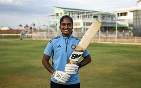
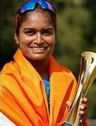

Women in Sports


Fifteen years ago, in the quaint town of Atmakuru in Andhra Pradesh, a ray of sporting prowess was born to humble farmers Ramalakshmi and Chandra. This beacon of athletic potential was Anusha, a young girl whose journey from the fields of her small town to the international cricket arena would become an inspirational tale etched in the annals of sports history. Anusha's early inspiration stemmed from her sisters' fervor for sports, particularly football. The year 2018 marked a significant turning point when Rural Development Trust (RDT), in collaboration with the LA LIGA FOUNDATION’s Women’s Football program, inaugurated the Residential Football Academy at Anantapur Sports Village. Anusha, captivated by the spirit of the game and fueled by her sisters' passion, emerged as one of the first recruits to the academy.
This pivotal decision, however, wasn't without its challenges. Despite her teachers' encouragement, Anusha faced skepticism from her farming parents. Undeterred, she pressed forward, and her daily routine at the Anantapur Sports Academy (ASA) became a testament to her unwavering dedication. Rising at 5 AM, Anusha would kickstart her day with a glass of milk before heading to the field for rigorous training sessions. Her perseverance bore fruit as she earned merits and secured a coveted spot on the Andhra Pradesh State Junior Football Team. Anusha's prowess on the football field transcended local competitions, leading her to participate in the Junior National Competitions, where she continued to shine and showcase her exceptional talent.
Yet, Anusha's journey was destined to take an unexpected turn. At the age of 20, she achieved a milestone that transcended her football achievements – she debuted in the Indian Women's Cricket Team. This remarkable feat marked the beginning of a new chapter in Anusha's sporting career, showcasing her versatility and adaptability across disciplines. The journey from football fields to cricket pitches was swift and extraordinary. Anusha's rise in cricket was meteoric – from making her mark with the under-23 team to clinching victory in the Asia Cup in June. Her stellar performance earned her a swift promotion to the senior team, and within a month, she found herself competing in Mirpur, Bangladesh, donning the national colors.
Anusha's transition from football to cricket was not just a change of sport; it symbolized a paradigm shift in her aspirations. She, who once honed her skills on the football pitch, now wielded the bat as the first female cricket player from the Anantapur Sports Academy. The significance of this achievement resonated beyond personal triumph; it marked the breaking of barriers and the forging of new paths for aspiring female cricketers. Her journey through the academy became a beacon for other young girls dreaming of achieving similar heights in the world of cricket. Anusha Bareddy, emerging as the most renowned left-hand spinner in Anantapur, became an icon for a new generation of female cricketers from Andhra Pradesh. Her story echoed the possibilities that unfold when determination meets opportunity and showcased the transformative impact of sports in transcending societal norms.
As Anusha now proudly represents the nation at the 19th Asian Games in China, she stands not just as a cricketer but as a symbol of inspiration for countless young girls. Her journey from the fields of Atmakuru to the international stage is a testament to the power of sports in shaping destinies, breaking barriers, and fostering dreams that know no bounds. Anusha Bareddy, the cricketing sensation, has etched her name in the tapestry of Indian sports, leaving an indelible mark for generations to come